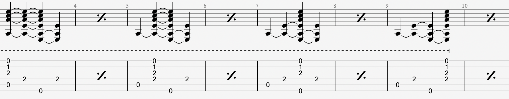
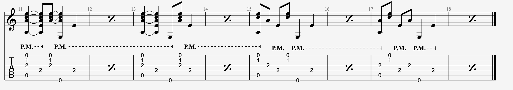

..
boom-chick 风格笔记
该部分主要是需要训练 右手大拇指 和 右手其他指头 的独立性 (AKA: Thumb Independent)

注意大拇指需要放松, 有一种跳跃的感觉为佳
练习1
分别在 1,2,3,4 拍去弹奏

练习2
分别在 1and,2and,3and,4and 去弹奏

该部分的练习比较难的是怎么4弦的闷音的同时, 让3弦奏响
练习3
音阶走一个! 分别用 2分, 4分 和 8分 来弹奏 G 调音阶